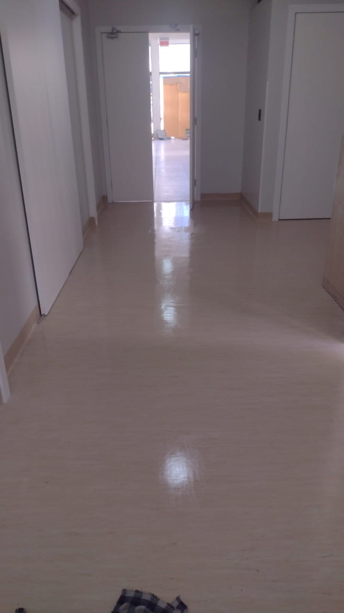
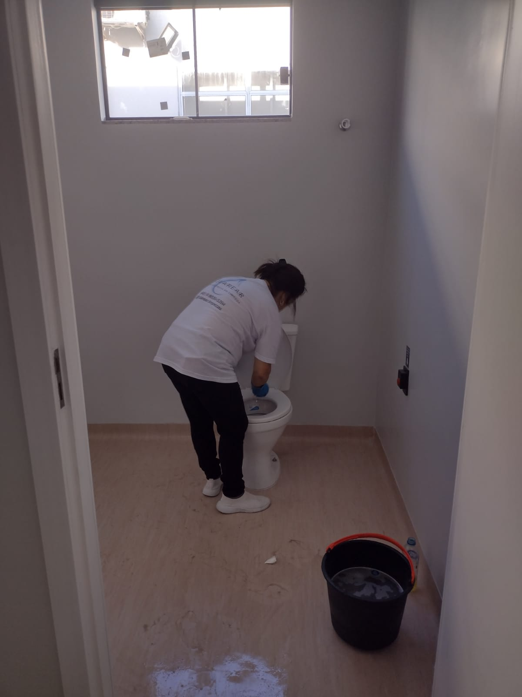

Limpeza pós-obra pensada para grandes empreendimentos.
Limpeza pesada, limpeza fina e pacote fechado para a entrega final, com equipe dimensionada conforme a metragem e o prazo da obra.
Escopo pensado para o ritmo de uma obra.
Atuamos na limpeza de empreendimentos recém-finalizados, removendo resíduos de obra e preparando o ambiente para entrega, vistoria ou uso.
Limpeza pesada
Remoção inicial de sujeira grossa, poeira de obra, respingos de tinta e resíduos acumulados durante a construção.
Limpeza fina
Acabamento detalhado em esquadrias, bancadas, metais e superfícies, deixando o ambiente pronto para vistoria.
Preparação para entrega
Organização final dos ambientes para chaves, vistoria da construtora ou ocupação imediata pelo cliente final.
Por que construtoras contratam a Clarear?
A limpeza pós-obra exige atenção aos detalhes, organização e equipe preparada para trabalhar com segurança e produtividade dentro do cronograma da obra.
Equipe conforme a demanda
Dimensionamos a equipe conforme metragem, prazo, nível de sujeira e complexidade do empreendimento.
Escopo e valor fechados
Antes da execução, alinhamos o que será feito, o prazo e as condições de entrega, sem custo surpresa.
Feito para grandes obras
Estrutura pensada para residenciais de alto padrão, torres e empreendimentos de grande metragem.
Como funciona o atendimento.
Análise
Você envia fotos, vídeos, metragem aproximada e informações do empreendimento.
Proposta
Montamos a proposta considerando equipe, prazo, produtos e complexidade da obra.
Execução
A equipe realiza a limpeza pesada e fina conforme o escopo combinado.
Entrega
Finalizamos os ambientes para vistoria, chaves ou ocupação imediata.
Empreendimentos residenciais e comerciais.

Limpeza pós-obra para entrega de unidades e áreas comuns.

Ambientes comerciais limpos e preparados para uso ou locação.

Cuidado extra com acabamentos, detalhes e apresentação final.
Precisa entregar um empreendimento limpo e pronto?
Solicite uma proposta de limpeza pós-obra e envie fotos ou vídeos do local para uma avaliação mais rápida.
Conte sobre o empreendimento.
Para agilizar a proposta, envie metragem aproximada, fotos ou vídeos do local, localização e prazo desejado.
- Atendimento em Santa Catarina
- Pós-obra residencial e comercial
- Equipe dimensionada conforme o tamanho da obra